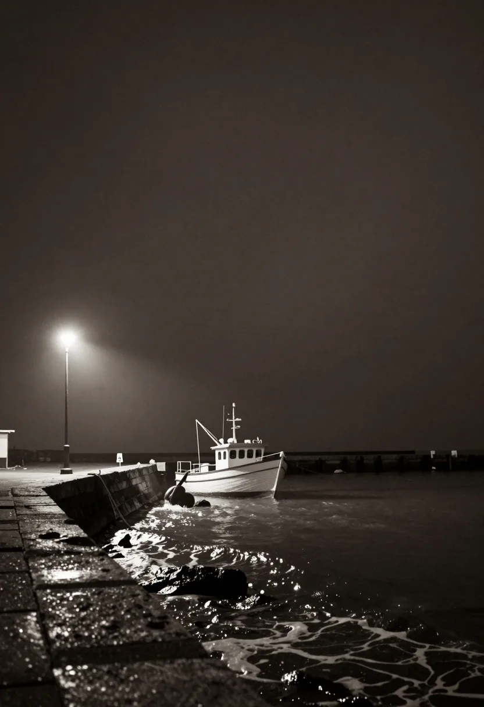
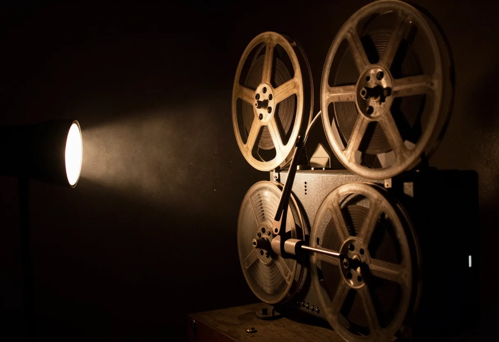

01 今月の一本
潮の鳴る夜
The Night the Tide Sounds

港の灯りが消えるころ、
潮だけが話しはじめる。
三十年閉じていた漁協の事務所で、
ひとりの女が古い録音テープを見つける。
再生すると、波の音のあいだに
知らない人の声が混じっていた。
本日の上映 日没の30分後
02 座席
五十八席。
どこに座るか決めておく。
席を選んでください
画面との距離と角度が、ここに映ります。
03 上映時刻
最後の回は、日没のあと。
夜の回は、その日の日没から30分後に始まります。日が短くなると、開始も早くなります。
| 日 | 昼 | 午後 | 日没の回 |
|---|---|---|---|
| 毎日 | 11:00 | 14:00 | 日没の30分後 |
昼は短編特集「港の短い夜」、午後と夜は「潮の鳴る夜」です。
04 灯座について
灯座について
暗くなるまで、
待ってもらいます。

灯座は、港を見下ろす坂の上にあった芝居小屋を、十年前に映画館へ作り替えたものです。席は五十八。座席は古い劇場のものを張り替えて使っています。
上映の前には照明を落として、五分だけ何も映しません。その五分で、外の音が小さくなります。
開館 10:30 ／ 休館 毎週水曜